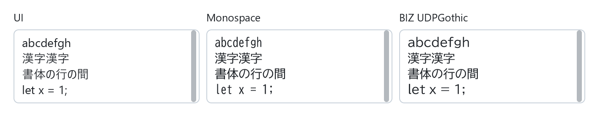
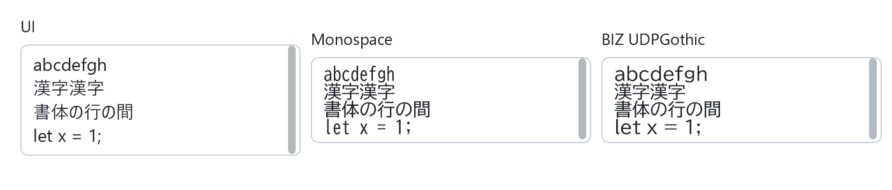

kargui 開発レポート ・ 第 7 章
書体
0.2 の後の 3 つ目として、書体を選べるようにしました。今までの kargui は、Windows では Yu Gothic UI だけで文字を出していました。コードを等幅で見せたい、読みやすい書体に切り替えたい、アプリに決まった書体を入れたい、という望みに応えます。書式付きの文字（太字・色・大きさが混ざった文）の土台にもなります。この章では、書き方、書体の探し方、入力欄で困ったこと、作者の手の確かめで見つかった行の間の不具合を順に書きます。
この章で分かること
- 書体を表す
Fontの 3 つの形と、窓・部品・アプリの書体のファイルの決め方 - 名前から書体を探す順番と、見つからない時の扱い
- 入力欄の書体が 1 フレーム遅れて伝わる理由（即時モードの順番の話）
- BIZ UD ゴシックの行がくっついた不具合と、作者の記録から見つけた手順
- 使わないアプリの起動を遅くしない作り
書き方: 窓の書体と部品の書体
書体は Font で表します。形は 3 つです。
| 書き方 | 使う書体 | 向いている所 |
|---|---|---|
Font::Ui（既定） | Yu Gothic UI | ふつうの画面の文字 |
Font::Monospace | BIZ UD ゴシック。無ければ Consolas、MS ゴシックの順 | コード・ファイルの名前・桁をそろえる数 |
Font::family("名前") | アプリが渡したファイルか、OS に入っている書体 | 読みやすさ・アプリの見た目に合わせた書体 |
窓全体の書体は Options::font で決め、動かしている間は ui.set_font で変えます。ラベル・入力欄・複数行の入力欄は、.font(書体) か .monospace() で自分の書体を持てます。アプリに書体を入れる時は、ファイルの中身を Options::fonts に渡します。書き方は iced と egui の形に近づけました。どちらも、書体のデータをアプリが渡し、文字ごとに書体を名前や種類で選びます。
let mut options = Options::new("帳簿");
options.font = Font::family("BIZ UDPGothic");
// アプリに入れる書体: options.fonts.push(include_bytes!("ShopSans.ttf").as_slice().into());
// view の中
ui.label("ID: 4F2A-0019").monospace();
ui.text_area(&mut code).monospace();
.monospace()（BIZ UD ゴシック）、.font(Font::family("BIZ UDPGothic"))。試験台で撮った。等幅は、日本語も持つ書体を先に
等幅の候補は、日本語も持つ BIZ UD ゴシックを先にしました。英字だけの等幅の書体（Consolas など）を選ぶと、日本語は OS の代わりの書体で出るので、日本語の幅が英字の 2 字分になりません。BIZ UD ゴシックなら、日本語 1 字が英字 2 字とちょうど同じ幅です。作者がメモ帳で打った時の記録でも、キャレットは日本語 1 字で 14 ピクセル、英字 1 字で 7 ピクセルずつ進んでいました。Linux では Noto Sans Mono CJK JP と TakaoGothic を先に置いています。
名前から書体を探す
Windows では、アプリが渡した書体のファイルを DirectWrite のメモリの書体の読み込み（CreateInMemoryFontFileLoader）で読み、名前で探せる一覧を作ります。Linux などの道では、parley の中の fontique に登録します。名前の書体が見つからない時は UI の書体で出すので、文字が消えることはありません。書体に無い文字（英字だけの書体の中の日本語など）は、OS の代わりの書体で出ます。
使わないアプリを遅くしない
第 3 章で、起動の時に大きな DLL を読み込んで 14 ms 遅くした失敗がありました。そこで、書体の仕組みも使う時まで何も読まないようにしました。Options::fonts が空なら書体のデータを読まず、OS の書体の一覧も、等幅や名前の書体を初めて使う時まで読みません。UI の書体だけを使うタスク帳は、前の版と同じ時に交互に測って、起動 53〜55 ms（前の版は 54〜58 ms）、メモリも同じでした。実行ファイルは 21 KB 増えて 1.34 MB です。
入力欄の書体は 1 フレーム遅れて伝わる
ラベルの書体は、描く時に部品の情報から読めば済みます。入力欄では困ったことがありました。kargui の入力欄は、ui.text_area(&mut s) を呼んだその中で、キーの入力を文字に当てます。上下の矢印でキャレットを動かす時は、文字を並べて「同じ横の位置」を測ります。ところが .monospace() は、その呼び出しの後に付きます。入力を処理している時点では、まだ書体が分かりません。
ui.text_area(&mut code) // ← ここでキーの入力を処理する（書体はまだ分からない）
.monospace(); // ← 書体が決まるのはここそこで、.monospace() が決めた書体を入力欄の状態に覚えておき、次のフレームの入力の処理で使うことにしました。入力欄を作るたびに覚えた書体を一度忘れ、.font() が呼ばれたらまた覚えます。アプリが .font() を呼ばなくなれば、次のフレームから窓の書体に戻ります。
試験では、1 行目に MMMM、2 行目に aaaaaaaa と書き、1 行目の終わりから下の矢印で 2 行目へ動かします。等幅なら M 4 つ分の位置は a 4 つ分なので、キャレットは 9 番目に来ます。.monospace() を外して走らせると 12 番目に行き、試験が落ちることも確かめました。
即時モードの部品は、呼んだ時に入力を処理して結果を返します。.font() のように後から付ける設定は、その回の入力の処理には使えません。第 1 章の「前のフレームの配置で当たりを決める」と同じく、前のフレームの値を使うのが kargui の決まった形です。書体が変わるのは利用者の操作の合間なので、1 フレームの遅れは見えません。
作者の手の確かめで見つかった、行の間の不具合
作者がメモ帳で「表示 > 等幅の書体」を試すと、記録の中のキャレットの高さが 19 ピクセルから 14 ピクセルに下がっていました。14 ピクセルは文字の大きさと同じです。行の上下にすき間が無く、行がくっついて見えていました。

BIZ UD ゴシックと BIZ UDP ゴシックは、書体の中の行の高さが文字の大きさと同じに作られています。kargui は書体どおりの行の高さで並べていたので、UI の書体（14 ピクセルで行の高さ 18.6）よりずっと詰まりました。直し方は、UI の書体以外は、行の高さが UI の書体より低ければ UI の書体の行の高さに広げ、字を行の真ん中に置く、です。DirectWrite では SetLineSpacing（UNIFORM）、parley では LineHeight::Absolute を使います。書体を変えても行の間と入力欄の高さが変わらないので、設定で書体を切り替えても画面の並びが崩れません。
| 書体 | 直す前 | 直した後 |
|---|---|---|
| UI の書体（Yu Gothic UI） | 19 px | 19 px |
| 等幅（BIZ UD ゴシック） | 14 px | 19 px |
| BIZ UDP ゴシック | 14 px | 19 px |
直す前はキャレットの高さ（ime.caret の h）、直した後は Enter で次の行へ移った時のキャレットの位置の差（116 → 135）。
書体の行の高さは、書体ごとに大きく違います。そのまま使うと、書体を切り替えただけで行がくっついたり、入力欄の高さが変わって画面の並びが崩れたりします。UI の書体の行の高さを下限にし、書体の方が低い時は広げてください。先に「行の間が UI の書体以上で、字が行に収まる」という試験を書き、DirectWrite と parley の両方で直す前に落ちることを確かめてから直しました。
作者からの知らせは「試した」だけでした。記録のキャレットの高さが 19 から 14 に変わっていたので、行がくっついていると分かりました。部品の位置や大きさを記録に書いておくと、言葉にされない見た目の不具合も拾えます。
CI でもう 1 つ見つかった: 英字だけの等幅の書体
直した版を GitHub に送ると、CI の Windows と macOS で、行の間の試験が落ちました。手元では通っていた試験です。
| 環境 | 等幅になった書体 | 等幅の行の間 | UI の書体の行の間 |
|---|---|---|---|
| 手元の Windows | BIZ UD ゴシック | 18.6 | 18.6 |
| CI の Windows | Consolas（BIZ UD ゴシックが無い） | 16.4 | 18.6 |
| CI の macOS | Menlo | 16 | 21 |
原因は、書体の行の高さを日本語の「あ」で測っていたことでした。Consolas や Menlo は英字だけの書体なので、「あ」は OS の代わりの書体で並びます。測った行の高さは代わりの書体の高い行で、UI の書体より低くないと判断し、広げる処理が効きませんでした。英字だけの行は、Consolas の 16.4 ピクセルのまま詰まります。手元の PC には BIZ UD ゴシックが入っているので、この道を通りませんでした。
直し方は、英字（Ag）と日本語（あ）の両方で測り、低い方を書体の行の高さにする、です。書体に無い字は代わりの書体で並んで高くなるので、低い方がその書体自身の行の高さです。試験に英字だけの等幅の書体（Windows は Consolas、macOS は Menlo、Linux は DejaVu Sans Mono）を足し、手元で CI と同じ数（16.39 と 16）で落ちることを確かめてから直しました（221f65d）。
直した版の CI では、Windows でもう 1 つ、設定の見本の試験が同じ理由で落ちました。書体を等幅に変えると「システム」の幅が変わる、という試験です。「システム」は日本語だけなので、Consolas では代わりの書体で出て、幅が 44 ピクセルのまま変わりません。英字を含む「14 pt」で測るように直しました。手元で Consolas を名前で選ぶと、「14 pt」は 32 から 39 ピクセルに変わります。
その次の CI では、Windows で Linux と同じ道（parley）を試す段が落ちました。「日本語も持つ等幅の書体なら、日本語 1 字が英字 2 字分」という試験です。この試験は、日本語も持つ等幅の書体が無い時は飛ばすはずでした。ところが、試験が見ていた書体の名前は候補の並び（"BIZ UDGothic", Consolas, …）そのもので、入っていない BIZ UD ゴシックが先頭にあるだけで「ある」と見なしていました。実際は英字が Consolas、漢字が MS ゴシックで並び、幅は 2 対 1 になりません。並びの中で入っている最初の書体の名前を見るように直しました（2ad664e）。CI の Windows は 2 つの文字の道で試験を走らせますが、前の段で落ちると後の段は走りません。3 回の CI で 1 つずつ見つかったのはそのためです。
書体は PC ごとに入っている物が違います。手元で通った試験が、書体の違う CI で初めて落ちました。書体に頼る試験は、日本語も持つ書体と英字だけの書体の両方を名前で選んで確かめてください。